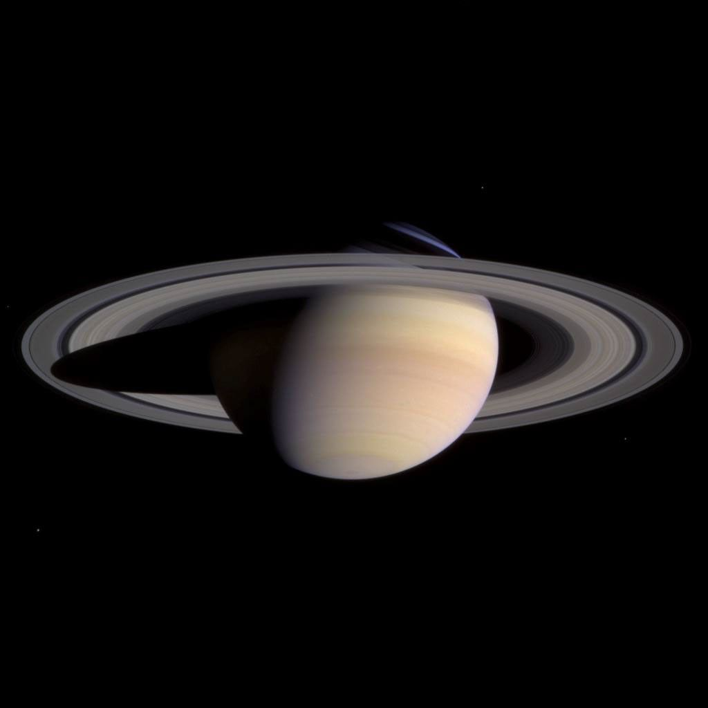

Небесные объекты
Сатурн

Сатурн — газовый гигант, знаменитый яркой системой колец из частиц льда и каменистого материала. Это наименее плотная планета Солнечной системы: в среднем она легче воды.
У Сатурна множество известных спутников, крупнейший из которых — Титан — обладает плотной атмосферой. Планету исследовала миссия Cassini, проработавшая на её орбите 13 лет.